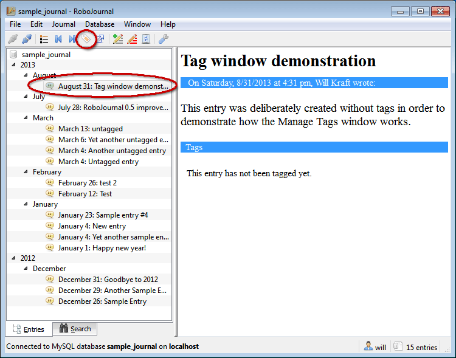
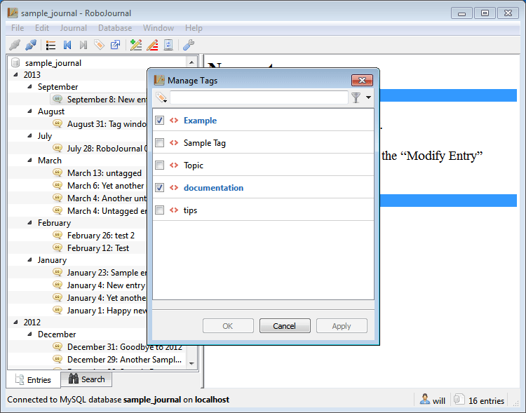
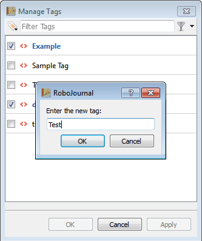
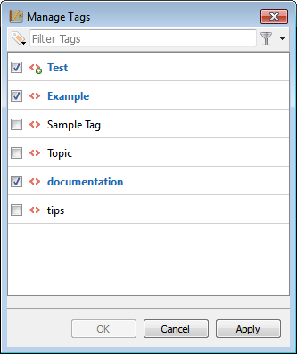

Working With Tags
Sections
- Tagging Overview
- Declaring a New Tag
- Assigning a Tag to an Entry
- Removing a Tag from an Entry
- Tag Reminder Window
Tagging Overview
As a journal gradually increases in size over the term of months and years, you may write about similar topic multiple times. If you are not using a range limit on such a journal, related entries may be harder to find and/or track once the sheer volume of entries is taken into account. While RoboJournal allows you to search for an entry using a keyword system, it is far easier to use the built-in tagging system to keep related entries together.
Best Practices
RoboJournal's tagging system allows you to assign one or more descriptive labels to an entry. Once declared, a new tag is available for all entries; you may apply any existing tags to entries as you see fit (however, each tag may only be used once in any given entry). RoboJournal does not currently make tagging suggestions based on entry content but that may change in future releases. In all cases, you should assign tags based on entry content and/or subject matter because RoboJournal's tagging system is designed to categorize by topic. For instance, all car-related entries may be tagged with "car" or "vehicle" but not "pet" unless the entry is also about your dog, cat, or any other type of pet. Ultimately, tag assignment is a matter of common sense.
RoboJournal supports the use of multi-word tags and there is no real set limit to how many tags may be assigned to each entry or how many tags the journal may hold. However, the tagging system is most effective when tags are short in length, broad (but not overly broad) in scope, and appropriate in number to the size and diversity of the journal. In other words, you should only declare new tags if your journal's subject matter requires it since tags are meant to be shared between entries. When you search for all instances of a specific tag, RoboJournal displays all entries that have had that tag assigned to them in the past.
New tags should only be created if all of the existing tags are inapplicable to an entry's content or subject. When you define a new tag, you should expect to eventually use it more than once. Tags that are only used once in an entire journal are useless because they provide only one result during searches (and the affected entry probably would have had other tags assigned to it anyway).
Accessing the Tagging Interface
The Manage Tags window is designed to work with the currently-selected entry in the Chronological Entry List. As such, using it requires an active connection; the tag function is locked while RoboJournal is in Default State due to there being no point of reference. Once the Manage Tags window is visible, you may perform any type of tag-related maintenance on the selected entry. You may only manage tags for one entry at a time.
The following procedure allows you to access the Manage Tags window:
- Click to select the entry you wish to tag (indicated by the large oval in Figure 1) in the Chronological Entry List on the RoboJournal main window. Figure 1: Select the entry you wish to tag and click the Manage Tags toolbar button.
- Click the Manage Tags toolbar button (as shown in the small circle in Figure 1). The Manage Tags window is displayed:Figure 2: The Manage Tags window is always superimposed over the main window.
Declaring a New Tag
Journals are deliberately created with no pre-existing tag data. RoboJournal leaves tag designation up to you because each journal is unique (therefore making it impossible to successfully anticipate your needs with a set of pre-defined tags) and you would know best about what is required. Each new tag, once defined, becomes available to the entire journal.
As stated in the previous section, any word may be used as a tag but it is always best to use short one-word tags that are applicable to several entries. The only reserved word you may not use for a tag is any variant of "null" (i.e null, Null, NULL, etc.) because that word has special properties in the RoboJournal tagging system. "Null" is a type of invisible tag that is used for entries that were previously tagged but currently have no tag data assigned to them (brand-new entries that have never been tagged are treated differently). Entries tagged with "Null" produce a response of, "No tags for this post" in the main window's Entry Output Pane.
The following procedure demonstrates how to declare a new tag in RoboJournal (the process assumes you have already displayed the Manage Tags window):
- Click the New Tag button on the Manage Tags window.Figure 3: The New Tag button launches a text prompt that allows you to define a new tag.
- The Enter the new tag: dialog is displayed. Enter the new tag into the text box:Figure 4: Enter the new tag into the provided text box.
- Click the OK button in the Enter the new tag: dialog to continue (or click the Cancel button to abort).
- The new tag is added to the Available Tags list. You may now apply this tag to the current entry.Figure 5: Newly-defined tags are inserted at the top of the list and are marked with a green plus-sign indicator.
Assigning a Tag to an Entry
Currently, a brand-new entry has no tag data associated with it immediately after it has been written and posted to the database (the ability to tag entries from the Editor may be added in a future release). As such, new entries display a "This entry has not been tagged yet" message in the Entry Output Pane on the main window as a reminder for you to tag the entry. Until an entry has been tagged, it is essentially invisible to the tag search function (although the entry may still be found through a pattern search).
The following procedure assumes that you have already selected the entry you wish to tag and that the Manage Tags window is displayed:
- Click the drop-down Available Tags list. The current
list of tags is displayed:
 Figure 6: The
Available Tags list contains all tags currently used in
the journal.
Figure 6: The
Available Tags list contains all tags currently used in
the journal. - Click the Apply Tag button to add the tag to the
entry.
 Figure 7: The
Apply Tag button assigns the currently-selected tag to the
entry.
Figure 7: The
Apply Tag button assigns the currently-selected tag to the
entry. - The selected tag is displayed in the current tags box (unlabeled but
shown within the red circle in Figure 8):
 Figure 8: The large area to
the left of the New Tag and Remove Tag
button displays all tags currently assigned to the entry.
Figure 8: The large area to
the left of the New Tag and Remove Tag
button displays all tags currently assigned to the entry.
- Repeat Steps 1 and 2 to add another tag to the entry (if necessary).
- Click the Apply button to save the current tags (the
Apply button is locked after this step and stays locked
unless you add or remove a tag).
 Figure 9: The
Apply button saves the current tag choices.
Figure 9: The
Apply button saves the current tag choices. - The OK button is unlocked once the save process is finished. Click the OK button to close the Manage Tags window and return to the RoboJournal main window.
The selected entry in the RoboJournal main window now has tags applied to it:Figure 10: The new tags are shown immediately in the RoboJournal main window.
Removing a Tag from an Entry
RoboJournal allows you to remove tags from entries if necessary. Once an entry has been stripped of all tags, it is automatically tagged with "Null" (as described in the Declaring a New Tag section). Removing all tags from an entry renders it invisible to tag searches but not pattern searches.
RoboJournal does automatic maintenance/housekeeping by removing old tags that are no longer used. RoboJournal cross-references all tags in use throughout the journal and appends every tag it finds to the Available Tags list (literally rebuilding the list from scratch) each time the Manage Tags window is displayed. Therefore, a tag is preserved for further use as long as it is already being used in at least one other entry.
The following procedure assumes that you have already selected the entry you wish to tag and that the Manage Tags window is displayed:
- Click to select the tag you wish to remove (indicated by the red oval in
Figure 11) from the current tags area.
 Figure 11: All active tags
for the current entry are represented by an orange tag icon next to the tag
name.
Figure 11: All active tags
for the current entry are represented by an orange tag icon next to the tag
name. - Click the Remove Tag button to continue.
 Figure 12: The Remove
Tag button is unlocked once you have made a selection.
Figure 12: The Remove
Tag button is unlocked once you have made a selection. - The tag you selected is removed from the list. Select and delete another
tag (if necessary) or click the Apply button to save your
actions.
 Figure 13: The
Apply button is unlocked after the tag data has been
changed.
Figure 13: The
Apply button is unlocked after the tag data has been
changed. - The OK button is unlocked after you have applied the changes you have made. Click the OK button to close the Manage Tags window and return to the RoboJournal main window.
The entry you modified is automatically refreshed to display the changes you
just made to its tag data:  Figure 14:
RoboJournal automatically displays all changes made to an entry (compare with
Figure 10).
Figure 14:
RoboJournal automatically displays all changes made to an entry (compare with
Figure 10).
Tag Reminder Window
RoboJournal takes additional measures (starting in version 0.4.1) to ensure that all entries in your journal are properly tagged since untagged entries are effectively invisible to tag searches and may only be found through pattern matching. The Tag Reminder window is essentially a "nag screen" that asks you to tag existing entries at the start of each session. The purpose of this feature is to encourage you to use the tagging system; the notification is deliberately designed to be annoying in the hopes that you will soon get in the habit of tagging new entries immediately after you write them in order to keep the Tag Reminder window from being displayed at all.
If RoboJournal finds any untagged entries, it adds them to a list and displays them on the Tag Reminder window immediately after login (the Tag Reminder window is not displayed if RoboJournal fails to find any untagged entries):Figure 15: The Tag Reminder window is shown only if RoboJournal detects untagged entries.
The Tag Reminder window list shows all entries that currently have no tag data. This is limited to entries that have never been tagged before. Entries that were tagged at some point and have subsequently had their tag data cleared (i.e. entries tagged as "null") are not included in the search because RoboJournal assumes you had a good reason for clearing the previous tag data. This search covers all entries in the journal from newest to oldest and ignores the current entry range limitation. As such, you may be asked to tag old entries that are no longer visible because they are out of the entry range you specified in RoboJournal Preferences.
You may click the Close button to postpone the tagging procedure. This hides the Tag Reminder window for the remainder of the session but it will still be displayed during the next login. You may permanently override the Tag Reminder window by unchecking the Display this notification during the next login (if necessary) checkbox and then clicking the Close button. This prevents the Tag Reminder window from being displayed again even if the journal still contains untagged entries at the next login (you may re-enable the Tag Reminder window through RoboJournal Preferences at any time).
Alternatively, you may select any entry from the list and click the Manage Tags button to apply tags to it (consult the "Assigning a Tag to an Entry" section). The Entry Title column in the list gives the title of an untagged entry while the value in the Date column provides a point of reference for the entry in question. After you tag each entry, the list automatically refreshes and the current count (x entries need to be tagged.) indicator is reduced by one. The Tag Reminder window automatically closes once the count indicator reaches zero. Once cleared, the Tag Reminder window will not be displayed during the next session (unless you add any new untagged entries during the current session).
Copyright © 2013 by Will Kraft. All parts of the RoboJournal Documentation are covered by the terms of the GNU Free Documentation License.